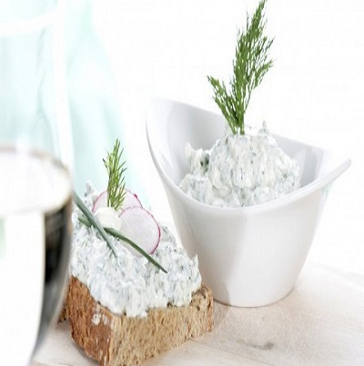

Диетична салата "Снежанка"
Продукти:
- 1 средно голяма прясна краставица
- 2 кофички обезмаслена извара (заменя цеденото кисело мляко в оригиналната рецепта)
- 3 средно големи скилидки чесън
- пресен копър
Начин на приготвяне:
Изсипете изварата в купа и с вилица намачкайте така, че да се получи хомогенна смес. Нарежете краставицата на кубчета, след което ги добавете към изварата и разбъркайте. Обелете чесъна и го накълцайте (може да го счукате и в хаванче). Добавете копъра и отново разбъркайте. Вече имате една прекрасна и здравословна салата Снежанка. За да допълните вкуса, може да сложите и хималайска сол на вкус, но все пак не забравяйте, че солта задържа вода в организма и влияе негативно по време на диета.